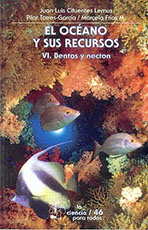
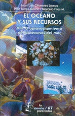
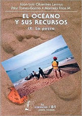

Referencias
Juan Luis Cifuentes Lemus
1929 -
Juan Luis es un apasionado de los océanos, de su enorme biodiversidad, de los distintos fenómenos que ocurren en torno a ellos y de los valiosos recursos que contienen. Su amor por el mundo acuático lo ha llevado a ser uno de los principales impulsores de las ciencias del mar en México desde varias trincheras: como investigador, profesor, administrativo y divulgador de la ciencia.
Nació en el Distrito Federal en 1929, donde estudió la licenciatura en Biología y la maestría en Ciencias en la Facultad de Ciencias de la UNAM. Por varios años, Juan Luis fue se dedicó a la docencia y a la investigación en su alma máter, hasta que en 1992 se integró al cuerpo docente de la Universidad de Guadalajara, donde labora actualmente.
A lo largo de su trayectoria ha ocupado diversos puestos: Director General del Instituto Nacional de Pesca; Subdirector de Asuntos Biológicos Pesqueros de la Secretaría de Industria y Comercio; presidente, y cofundador, del Colegio de Biólogos de México, entre varios más.
En reconocimiento a su destacada trayectoria y contribución al desarrollo de la biología pesquera y de las ciencias del mar en México, ha recibido el doctorado honoris causa de parte de numerosas universidades del país, incluso internacionales.
A Juan Luis también le interesa conservar la riqueza biológica de los mares; por ejemplo, fundó el Programa de Protección y Conservación de la Tortuga Marina en México; así como en defenderlos cuando ha sido necesario o de buscar mejores formas de aprovechamiento de los recursos oceánicos, sobre todo los pesqueros.
Una de sus principales obras de divulgación de la ciencia es “El Océano y sus recursos”, una serie de doce volúmenes que aborda las investigaciones oceánicas realizadas en México y el mundo desde distintos ángulos.
Aportación
- 
El Océano y sus recursos VI.
Bentos y necton

El Océano y sus recursos VIII.
El aprovechamiento de los recursos del mar

El Océano y sus recursos IX.
La Pesca
Colección Ciencia para todos. Fondo de Cultura económica